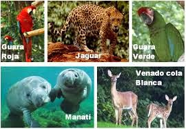
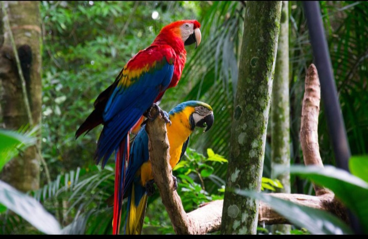

Honduras es un pais con una amplia y rica biodiversidad, donde avitan muchas especies de animales tanto endemicas como exoticas, dificiles de encontrar en otros rincones del mundo. Existen muchos animales en peligro de extincion en honduras debido a actividades humanas como casa, contaminacion calentamiento global o la destruccion de habitat natural de estas especies.

En honduras existen alrededor de 250 reptiñes y anfibios, mas de 700 especies de aves y 110 especies de mamiferos, distribuidos en las diferentes regiones ecologicas de honduras, algunas de ellas son las siguientes segun su categoria.
